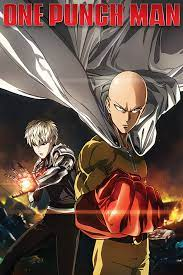

<div>
    
    <p>One-Punch Man (Japanese: ワンパンマン, Hepburn: Wanpanman) is a Japanese superhero franchise created by the artist ONE.
        It tells the story of Saitama, a superhero who can defeat any opponent with a single punch but seeks to find a
        worthy opponent after growing bored by a lack of challenge due to his overwhelming strength. ONE wrote the
        original webcomic version in early 2009.

        A digital manga remake began publication on Shueisha's Tonari no Young Jump website in June 2012. The manga is
        illustrated by Yusuke Murata, and its chapters are periodically compiled and published into individual tankōbon
        volumes. As of December 2021, 24 volumes have been released. In North America, Viz Media has licensed the remake
        manga for English language release and was serialized in its Weekly Shonen Jump digital magazine.

        An anime adaptation of the manga, produced by Madhouse, was broadcast in Japan from October to December 2015. A
        second season, produced by J.C.Staff, was broadcast from April to July 2019. The anime series is licensed in
        North America by Viz Media, and premiered in the United States on Adult Swim's Toonami programming block in July
        2016. The second season premiered in October 2019.

        As of June 2012, the original webcomic surpassed 7.9 million hits. As of April 2020, the manga remake had sold
        over 30 million copies worldwide.</p>
</div>